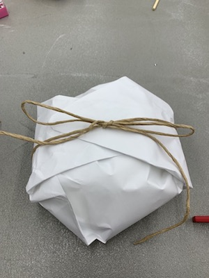
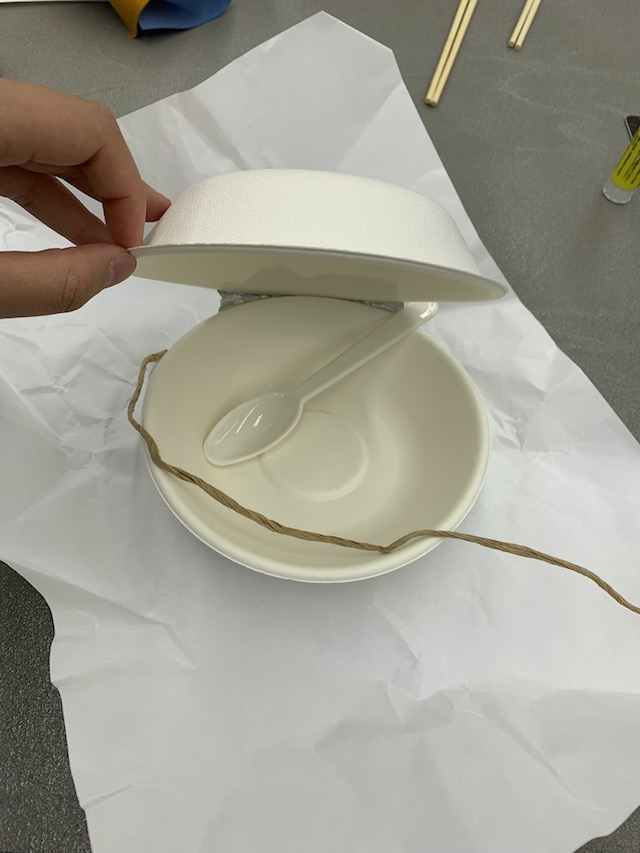

商品概要
使いやすいお弁当
作業進捗
進捗を時間軸でつらつらと書いていく
できる限り内容の書き直しはしないでください。
最後の振り返りに使いたいので。
また、途中でアイデアが変わったり、自身の判断で開発を終了する場合もあると思います。
その場合はその旨を記録するようにしてください。
ダーティープロトタイピング
 参考事例の商品
Example
質問
- Q; 日常的に使うのかそれとも使い捨て？
- A; まだ決まっていないが下のマットはランチョンマットを参考にした
- Note; 使い捨てや日常的に使うものによって素材が変わる
- Q; サイズは？
- A; 一人用で考えている